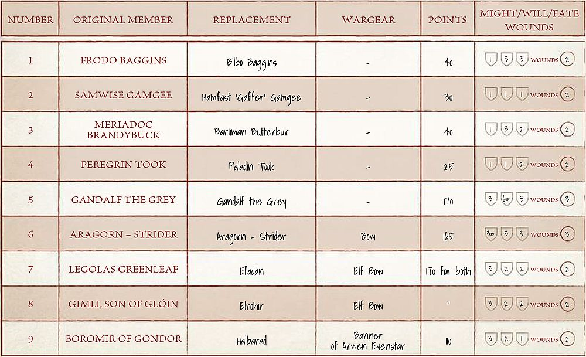

Quest of the Ringbearer
THE JOURNEY OF THE RINGBEARER CAMPAIGN
Here we present you with the Journey of the Ringbearer campaign, a system of linking your games together in such a way that the results of one game can impact your next game or even one much later on! This will connect together the already dynamic Narrative Play Scenarios in such a way that it will feel as if you are playing through the scenes directly from the books and the movies.
As you may have already guessed, this supplement focuses on the journey that Frodo Baggins embarked on with the Ring. The Scenarios start with Frodo's journey to get the Ring to Rivendell; beginning in the Shire and following Frodo's travels to Crickhollow, through the Old Forest and Bree, before his terrifying encounter with the Nazgûl at Weathertop and subsequent arrival at Rivendell. From there the campaign specifically follows the path of the Ringbearer; from Moria, to Amon Hen and then when Frodo and Sam separate from the Fellowship and go to Mordor alone. The Scenarios allow you to play through all aspects of Frodo's quest to destroy the Ring.
You can play this campaign with as few as two people or, if you wish, different players can take control of the forces in different Scenarios, that way you can get a whole gaming group involved. However, it is important to note that you should play the Scenarios in order as the results of one Scenario may change how a later one plays...
LINKING YOUR GAMES
Here we present rules on how to join your games together as you follow the journey to destroy the Ring. There are rules for what happens when members of the Fellowship are slain in battle, bonuses between Scenarios, and even how your Heroes regain their strength between games and recover their spent Might, Will, and Fate points – if they aren't too weary of course.
SURVIVING THE JOURNEY
There is a very real likelihood that some members of the Fellowship or their allies will perish along the journey; such dangerous adventures are not without risk, after all. It is important to record when Hero models spend Might, Will and Fate or suffer any Wounds as they will have the chance to regain them after the game. Whenever a Good Hero model is slain or removed as a casualty during a game, they may not actually be dead. Instead, you will need to roll on the Campaign Injury table below for them to see what effects their injuries have. Models slain may use any remaining Might to alter the result on the table.
| D6 | Result |
|---|---|
| 1 | Dead – This Hero has been slain in battle. If Frodo is ever slain, then the campaign comes to an end and Middle-earth falls into darkness. |
| 2-3 | Wounded – This Hero regains 1 Wound, but otherwise may not regain any other characteristics unless they are chosen as the Bravest Companion. |
| 4+ | Recovered – This Hero regains 1 Wound and then may recover as normal. |
Additionally, if the Good player wins the Scenario, all their Hero models will gain a bonus of +1 to their rolls on the Campaign Injury table.
RECOVERING STRENGTH
As our Heroes battle their way through Middle-earth, they will become weary and tired beyond measure; their adventures taking their toll upon each member of the Fellowship, and often they will leave a battle exhausted and injured. To represent this, Good Hero models do not automatically regain any spent Might, Will, Fate or Wounds between games. Instead, they will regain a number of Might, Will, Fate and Wounds depending on how they performed in the previous game.
To do this, follow the steps on this page, starting with the Bravest Companion, then Fellow Adventurer and finally Fool of a Took!
Bravest Companion - After the game, both players should discuss which of the Good Hero models has performed above and beyond the call of duty. Perhaps they fended off many enemies, or sacrificed themselves for the good of the Ringbearer. This model may regain D6 Might, Will, Fate or Wounds of the controlling player's choice (this may be a mix of any) up to the value of the model's characteristics. If the Hero survived the previous battle, they may re-roll the D6 if they choose but the second result will stand even if it is worse than the first.
It is important for both players to be honest when making the decision of which model is awarded the Bravest Companion as it makes for the campaign to be much more interesting.
Fellow Adventurer - All other Hero models may regain D3 Might, Will, Fate or Wounds of the controlling player's choice (this may be a mix of any) up to the value of the model's characteristics. If the Hero survived the previous battle, they may re-roll the D3 if they choose but the second result will stand even if it is worse than the first. The only exception to this is if a model is chosen as…
Fool of a Took! - After the game, both players should discuss which of the Good Hero models, if any, has performed poorly in the previous game. This model gains no bonus whatsoever. This doesn't have to be awarded if both players agree that all the Good Hero models pulled their weight fairly. It is important for both players to be honest when making the decision as to which model is awarded the Fool of a Took! as it makes for the campaign to be much more interesting.
REST POINTS
At certain points in the campaign Frodo and his companions will have the chance to rest. When this is the case following a Scenario, all surviving Good Hero models will replenish their Might, Will, Fate and Wounds up to their starting values before the next game. These rest points will be clearly listed in the order of Scenarios and Scenario bonuses.
SCENARIO BONUSES
After each Scenario has been completed, it is important to note down which side won that Scenario, either Good or Evil. This is important as, depending on who was victorious, there may be a bonus or penalty to a certain side in the next Scenario. For example, if the Good side is victorious in the Short Cuts Make Long Delays Scenario, the Good side will receive a bonus in the Buckleberry Ferry Scenario – the next Scenario in the campaign. These bonuses reflect the advantages of success and the edge it will give either side in a future Scenario in the campaign.
(1) FARMER MAGGOT'S CROP
Good Victory: In the 'Short Cuts make Long Delays' Scenario, Gildor may start within 3" of the centre of the eastern board edge.
Evil Victory: In the 'Short Cuts make Long Delays' Scenario, the Hobbits must start the game in base contact with the hedge on the western side of the hedge.
(2) SHORT CUTS MAKE LONG DELAYS
Good Victory: In the 'Buckleberry Ferry' Scenario, the Hobbits may deploy between 6" and 15" of the western board edge.
Evil Victory: In the 'Buckleberry Ferry' Scenario, the Evil player has Priority during the first turn of the game.
(3) BUCKLEBERRY FERRY
Good Victory: In 'The Old Forest' Scenario, the Hobbits may deploy within 3" of the centre of the western board edge.
Evil Victory: In 'The Old Forest' Scenario, the Hobbits may only move half of their Move allowance during the first turn.
(*) CRICKHOLLOW – REST POINT
(4) THE OLD FOREST
Good Victory: In the 'Fog on the Barrow-downs' Scenario, Tom Bombadil will arrive on the roll of a 4+ rather than a 5+.
Evil Victory: In the 'Fog on the Barrow-downs' Scenario, the Barrow-wights will successfully sacrifice a Hobbit on a 3+ rather than a 4+.
(5) FOG ON THE BARROW-DOWNS
Good Victory: In the 'Nazgûl in Bree' Scenario, Frodo may re-roll his first failed Courage test for the Lure of the Ring special rule.
Evil Victory: In the 'Nazgûl in Bree' Scenario, Good models may only move half their normal Move allowance on the first turn.
(*) HOUSE OF TOM BOMBADIL – REST POINT
(6) NAZGÛL IN BREE
Good Victory: In the 'Weathertop' Scenario, Aragorn will arrive on a 3+ rather than a 4+.
Evil Victory: In the 'Weathertop' Scenario, Aragorn will arrive on a 5+ rather than a 4+.
(7) WEATHERTOP
Good Victory: In the 'Flight to the Ford' Scenario, the Witch-king starts the game with 4 Will points rather than 5.
Evil Victory: In the 'Flight to the Ford' Scenario, the Ringwraiths may re-roll the D6 when determining how far their horses can move.
(8) FLIGHT TO THE FORD
Good Victory: In the 'Pass of Caradhras' Scenario, Frodo may ignore the first Wound he suffers.
Evil Victory: In the 'Pass of Caradhras' Scenario, the Evil player may bury one card from the western-most column before the first turn of the game.
(*) RIVENDELL – REST POINT
(9) THE PASS OF CARADHRAS
Good Victory: In the 'Wargs in the Night' Scenario, Good models may re-roll To Hit rolls when making shooting attacks.
Evil Victory: In the 'Wargs in the Night' Scenario, once per game the Evil player may choose to automatically gain Priority. During this turn, no Good models may declare a Heroic Move.
(10) WARGS IN THE NIGHT
Good Victory: In 'The Gates of Moria' Scenario, the Good player may deploy the remaining Good models within 3" of the gates to Moria.
Evil Victory: In 'The Gates of Moria' Scenario, Frodo may not move during the first turn of the game.
(11) THE GATES OF MORIA
Good Victory: In the 'Balin's Tomb' Scenario, Frodo may re-roll failed Fate rolls.
Evil Victory: In the 'Balin's Tomb' Scenario, the Cave Troll may re-roll failed To Wound rolls.
(12) BALIN'S TOMB
Good Victory: In the 'Escape from Dwarrowdelf' Scenario, Chasm Markers cannot be placed during the first four turns of the game.
Evil Victory: In the 'Escape from Dwarrowdelf' Scenario, before the first turn begins, the Evil player may place a single Chasm Marker on one of the walkways at least 6" away from any Good model.
(13) ESCAPE FROM DWARROWDELF
Good Victory: In 'The Bridge of Khazad-dûm' Scenario, Gandalf may re-roll a single D6 when attempting to cast the Sorcerous Blast Magical Power on the bridge.
Evil Victory: In 'The Bridge of Khazad-dûm' Scenario, the Balrog may subtract 1 from its rolls to see if it arrives.
(14) THE BRIDGE OF KHAZAD-DÛM
Good Victory: In the 'Lothlórien' Scenario, the Good player may re-roll the D6 when determining which marker the Elves are located at.
Evil Victory: In the 'Lothlórien' Scenario, the Evil player may force the Good player to re-roll the D6 when determining which marker the Elves are located at.
(15) LOTHLÓRIEN
Good Victory: In the 'Aragorn's Stand' Scenario, the Good player adds 1 to the roll when determining if Legolas and Gimli have arrived.
Evil Victory: In the 'Aragorn's Stand' Scenario, the Good player subtracts 1 from the roll when determining if Legolas and Gimli have arrived.
(*) LOTHLÓRIEN – REST POINT
(16) ARAGORN'S STAND
Good Victory: In the 'Boromir's Redemption' Scenario, Boromir may have a shield.
Evil Victory: In the 'Boromir's Redemption' Scenario, Evil models may re-roll failed To Wound rolls against Boromir in combat.
(17) BOROMIR'S REDEMPTION
Good Victory: In 'Breaking of the Fellowship' Scenario, Boromir starts the game with 2 Wounds rather than 1.
Evil Victory: In 'Breaking of the Fellowship' Scenario, Boromir starts the game with 2 Might rather than 3.
(18) BREAKING OF THE FELLOWSHIP
Good Victory: In the 'Taming of Sméagol' Scenario, the Hobbits may re-roll failed To Wound rolls against Gollum.
Evil Victory: In the 'Taming of Sméagol' Scenario, Gollum may ignore the first natural 6 that is rolled when determining if he has woken the Hobbits.
(19) AMBUSH AT AMON HEN
Good Victory: In the 'Taming of Sméagol' Scenario, the Hobbits may re-roll failed To Wound rolls against Gollum.
Evil Victory: In the 'Taming of Sméagol' Scenario, Gollum may ignore the first natural 6 that is rolled when determining if he has woken the Hobbits.
(20) THE TAMING OF SMÉAGOL
Good Victory: In 'The Dead Marshes' Scenario, Frodo, Sam, and Sméagol may deploy within 6" of the centre of the western board edge.
Evil Victory: In 'The Dead Marshes' Scenario, the Ringwraith may deploy within 6" of the centre of the eastern board edge.
(21) THE DEAD MARSHES
Good Victory: In the 'Ambush at Ithilien' Scenario, Good Hero models may re-roll failed To Wound rolls when making shooting attacks.
Evil Victory: In the 'Ambush at Ithilien' Scenario, one Mûmak may make a 'free' move before the first turn begins.
(22) AMBUSH AT ITHILIEN
Good Victory: In the 'Osgiliath' Scenario, Good reinforcements return to the board on a 3+ rather than a 4+.
Evil Victory: In the 'Osgiliath' Scenario, Evil reinforcements return to the board on a 3+ rather than a 4+.
(*) ITHILIEN – REST POINT
(23) OSGILIATH
Good Victory: In the 'Sméagol's Treachery' Scenario, Sam automatically has the first turn.
Evil Victory: In the 'Sméagol's Treachery' Scenario, Gollum automatically has the first turn.
(24) SMÉAGOL'S TREACHERY
Good Victory: In the 'Shelob's Lair' Scenario, Sam may deploy up to 6" from the centre of the western board edge.
Evil Victory: In the 'Shelob's Lair' Scenario, Sam may not move during the first turn of the game.
(25) SHELOB'S LAIR
Good Victory: In the 'Cirith Ungol' Scenario, Shagrat may re-roll 1s when rolling To Wound.
Evil Victory: In the 'Cirith Ungol' Scenario, Gorbag may re-roll 1s when rolling To Wound.
(26) CIRITH UNGOL
Good Victory: In the 'Plateau of Gorgoroth' Scenario, Sam may re-roll all failed To Wound rolls.
Evil Victory: In the 'Plateau of Gorgoroth' Scenario, the Hobbits will be discovered on a 5+ rather than a 6.
(27) PLATEAU OF GORGOROTH
Good Victory: In 'The End of All Things' Scenario, whenever Frodo suffers a Wound, roll a D6. On the roll of a natural 6, the Wound is ignored.
Evil Victory: In 'The End of All Things' Scenario, the Evil player may use the Exhaustion power on a 2+ rather than a 3+.
FANTASY FELLOWSHIP
INTRODUCTION
One of the great things about the Middle-earth Strategy Battle Game is that it allows you to explore what could have happened in various different situations. This is exactly what 'Fantasy Fellowship' is all about, allowing you to create your own Fellowship of the Ring and play out the various Scenarios throughout the War of the Ring to see if your own Fellowship could save Middle-earth.
There are loads of 'what if' Scenarios that you could explore to change up your Fellowship before they embark on their long and arduous quest to Mount Doom. For instance, imagine if Denethor had sent Faramir to Rivendell instead of Boromir, or if Saruman had never been corrupted by the Palantír and aided the Ringbearer in his quest. What if Rohan had been present at the Council of Elrond and it was Éomer or even Théodred that journeyed instead of Boromir and Aragorn.
You can even explore what would have happened if Bilbo had taken the Ring himself. Perhaps he would have been accompanied by one of the Dwarves of Thorin's Company, or maybe Heroes such as Bard the Bowman, Radagast the Brown, or even Beorn may have joined Bilbo in his quest to destroy The One Ring.
This is the major concept behind Fantasy Fellowship. It allows you, the gamer, to form your own Fellowship using the rules presented here and see how far along the quest to Mount Doom they can get. You can also take the original Fellowship and see if they can survive longer than in the story.
SELECTING YOUR FELLOWSHIP
STEP 1: THE RINGBEARER
Naturally, your Fellowship must have a Ringbearer to carry the Ring to Mount Doom. This can be any one of the four following profiles:
- Frodo Baggins (from The Fellowship army list)
- Bilbo Baggins (from the Thorin's Company army list)
- Bilbo Baggins (from The Shire army list)
- Sméagol (from The Fellowship army list)
If your chosen Ringbearer is Sméagol then he gains The Ring. Additionally, he ignores his 'Serve the Master of the Precious' special rule.
STEP 2: COMPANION
The second most important member of your Fellowship, every Ringbearer will need a loyal friend to aid them on their journey. This is the character that will keep your Ringbearer on track, regardless of whatever hardships and perils lie in front of them.
Your Ringbearer's Companion can be any Hobbit Hero that has not already been chosen as your Ringbearer, with the exception of the four Travellers: Frodo of the Nine Fingers; Samwise the Brave; Meriadoc, Captain of the Shire, and Peregrin, Captain of the Shire.
If Bilbo Baggins from the Thorin's Company army list is chosen then his Companion may instead be any other member of Thorin's Company under 60 points if you wish.
STEP 3: THE REST OF YOUR FELLOWSHIP
With your Ringbearer and Companion now selected, it is time to choose the remaining members of your Fellowship to join them in their journey. Each chosen member will have to replace a certain character from the original Fellowship, and will replace that character in all the Scenarios that would have featured them along the way – so decide which of your chosen members replaces which original members wisely!
Merry and Pippin may be replaced by any named Hero models in the game, however, neither may cost more than 50 points each, including any wargear purchased for them.
Gandalf the Grey must be replaced by a Hero model from the following list, all of which can utilise a variety of different Magical Powers to their advantage: Gandalf the Grey; Saruman the White; Radagast the Brown; Galadriel; Elrond, Master of Rivendell; Celeborn; Círdan; Arwen Undómiel; Gildor Inglorion; Thranduil, King of the Woodland Realm.
If Saruman the White is selected as your Wizard then you may select Gríma Wormtongue as a member of your Fellowship. The remaining members of your Fellowship (Aragorn, Legolas, Gimli and Boromir) can be replaced by any other named Hero models you choose. Remember that whoever you choose to replace certain characters will take on their role. So, if you choose Prince Imrahil as your replacement for Aragorn, it will be Prince Imrahil that fights at Helm's Deep. It is also important to remember that Boromir is doomed to die, so whoever you choose to replace Boromir will also be doomed to die!
There are a few additional rules to take into account when selecting your Fantasy Fellowship, which are detailed below:
-
Naturally, all of your Hero models must be from the Good side – no Evil models here!
-
The total cost of your Fellowship may not exceed 750 points – so choose carefully!
-
If you choose another character who can take The Ring, they do not get it in this campaign – you have already selected your Ringbearer after all!
-
Models may purchase additional wargear from their profile.
-
Heroes that are bought as a pair, such as Elladan & Elrohir or Múrin & Drár, will take up two slots in your Fellowship.
-
All models must have the Infantry Keyword, as such no models can be purchased a mount of any kind.
-
The Rule of One applies here, so multiples of the same named Hero or wargear cannot be taken.
-
Whilst players are free to select their own members, we find that Fantasy Fellowship works better, and feels more thematic, if the selected members all co-existed and were alive at the same time.
-
The following models cannot be included in your Fellowship under any circumstances: Tom Bombadil; Goldberry; Gandalf the White; Galadriel, Lady of Light.
Below is an example of a Fantasy Fellowship. You will notice that Bilbo hasn't been given Sting or the Mithril Coat; this is because he will receive them when he reaches Rivendell and it is better to save precious points rather than spend them now.

CAMPAIGN
Whilst it will be tempting to select additional wargear for the members of your Fellowship, one of the most rewarding parts of playing through Fantasy Fellowship*is seeing how your heroes develop and grow. In this campaign, when your Fellowship reaches certain points, they will receive wargear or upgrades that correspond to the actual items received in the books or films.
For example, when Frodo reaches Rivendell he is gifted Sting and the Mithril Coat; and when the Fellowship reach Lothlórien they are given Elven Cloaks.
You should keep this in mind when selecting your Fellowship; you don't want to spend precious points on wargear that you may end up getting for free during the campaign!
THE CAMPAIGN
The Fantasy Fellowship campaign consists of a total of 23 different Scenarios following the journey of the Fellowship from the Shire all the way to the fires of Mount Doom. You should play these Scenarios in the order given to faithfully recreate the epic adventure that the Fellowship of the Ring undertook. Each Scenario will also list the original members of the Fellowship that would normally take part in that Scenario; all you need to do is swap them for the relevant Heroes from your own Fantasy Fellowship. It will also tell you where to find the Scenario in question; some can be found in this supplement, whilst others appear in other publications.
Additionally, there are some extra rules for linking your games together, such as if members of your Fellowship fall along the way, or how much of their strength they recover between games.
SURVIVING THE JOURNEY
There is a very real likelihood that some members of your Fellowship will perish on the journey; such dangerous adventures are not without risk, after all. It is important to record when Hero models spend Might, Will, and Fate, or suffer any Wounds, as they will have the chance to regain them after the game. Whenever a member of your Fellowship is slain or removed as a casualty during a game, they may not actually be dead. Instead, you will need to roll on the Campaign Injury Table below to see what effects their injuries have. Models slain may use any remaining Might to alter the result on the table.
| D6 | Result |
|---|---|
| 1 | Dead – This Hero has been slain in battle. If your Ringbearer is ever slain, then the campaign comes to an end and Middle-earth falls into darkness. |
| 2-3 | Wounded – This Hero regains 1 Wound, but otherwise may not regain any other characteristics unless they are chosen as the Bravest Companion. |
| 4+ | Recovered – This Hero regains 1 Wound and then may recover as normal. |
Additionally, if the Good player wins the Scenario, all their Hero models will gain a bonus of +1 to their rolls on the Campaign Injury Table.
RECOVERING STRENGTH
As your Fellowship battles its way through Middle-earth, they will become weary and tired beyond measure; their adventures taking their toll upon each member of your Fellowship, and often they will leave a battle exhausted and injured. To represent this, members of your Fellowship do not automatically regain any spent Might, Will, Fate, or Wounds between games. Instead, they will regain a number of Might, Will, Fate, and Wounds depending on how they performed in the previous game.
Bravest Companion - After the game, both players should discuss which member of your Fellowship has performed above and beyond the call of duty. Perhaps they fended off many enemies or sacrificed themselves for the good of the Ringbearer. This model may regain D6 Might, Will, Fate, or Wounds of the controlling player's choice (this may be a mix of any) up to the value of the model's characteristics. If the Hero survived the previous battle, they may re-roll the D6 if they choose, but the second result will stand even if it is worse than the first. It is important for both players to be honest when making the decision of which model is awarded the Bravest Companion as it makes the campaign much more interesting.
Fellow Adventurer - All other members of your Fellowship may regain D3 Might, Will, Fate, or Wounds of the controlling player's choice (this may be a mix of any) up to the value of the model's characteristics. If the Hero survived the previous battle, they may re-roll the D3 if they choose, but the second result will stand even if it is worse than the first. The only exception to this is if a model is chosen as...
Fool of a Took! - After the game, both players should discuss which member of your Fellowship, if any, has performed poorly in the previous game. This model gains no bonus whatsoever. This doesn't have to be awarded if both players agree that all members of your Fellowship pulled their weight fairly. It is important for both players to be honest when making the decision as to which model is awarded the Fool of a Took! as it makes the campaign much more interesting.
REST POINTS
At certain points in the campaign, your Fellowship will have the chance to rest. When this is the case following a Scenario, all surviving members will replenish their Might, Will, Fate, and Wounds up to their starting values before the next game. These will be clearly listed in the order of Scenarios. Some rest points may only apply to certain Hero models; where this is the case, it will be clearly stated.
SCENARIOS
Here we present the Scenarios that should be played as part of a Fantasy Fellowship campaign, along with the Heroes that would normally play that Scenario for you to replace with members of your own Fellowship, and where you can find that Scenario. If you wish, you can add more Scenarios to this list if you want to play through every single aspect of the story.
If a Scenario lists a Hero in its Participants that you have in your Fellowship, other than the ones that are replaced by your Fantasy Fellowship then replace that model with a suitable Captain to represent them in that Scenario.
For example, if you have chosen Éomer as part of your Fantasy Fellowship, then in the Éomer's Return Scenario he will be replaced by a Captain of Rohan with appropriate wargear. Similarly, if you have selected Faramir as part of your Fantasy Fellowship then in the Osgiliath Scenario he will be replaced by a Captain of Minas Tirith with appropriate wargear.
(1) BUCKLEBERRY FERRY
Fellowship Members: Frodo Baggins; Samwise Gamgee; Meriadoc Brandybuck; Peregrin Took
(*) HOUSE OF TOM BOMBADIL – REST POINT
(2) FOG ON THE BARROW-DOWNS
Fellowship Members: Frodo Baggins; Samwise Gamgee; Meriadoc Brandybuck; Peregrin Took
(3) WEATHERTOP
Fellowship Members: Frodo Baggins; Samwise Gamgee; Meriadoc Brandybuck; Peregrin Took; Aragorn – Strider
(*) RIVENDELL – REST POINT
(4) WARGS IN THE NIGHT
Fellowship Members: Frodo Baggins; Samwise Gamgee; Meriadoc Brandybuck; Peregrin Took; Aragorn – Strider; Legolas Greenleaf; Gimli, son of Glóin; Gandalf the Grey; Boromir of Gondor
(5) BALIN'S TOMB
Fellowship Members: Frodo Baggins; Samwise Gamgee; Meriadoc Brandybuck; Peregrin Took; Aragorn – Strider; Legolas Greenleaf; Gimli, son of Glóin; Gandalf the Grey; Boromir of Gondor
(6) ESCAPE FROM DWARROWDELF
Fellowship Members: Frodo Baggins; Samwise Gamgee; Meriadoc Brandybuck; Peregrin Took; Aragorn – Strider; Legolas Greenleaf; Gimli, son of Glóin; Gandalf the Grey; Boromir of Gondor
(7) THE BRIDGE OF KHAZAD-DÛM
Fellowship Members: Frodo Baggins; Samwise Gamgee; Meriadoc Brandybuck; Peregrin Took; Aragorn – Strider; Legolas Greenleaf; Gimli, son of Glóin; Gandalf the Grey; Boromir of Gondor
In this Scenario, whichever Hero replaced Gandalf may cast the Sorcerous Blast Magical Power on the bridge for the purposes of the Scenario.
(*) LOTHLÓRIEN – REST POINT
(8) AMBUSH AT AMON HEN
Fellowship Members: Frodo Baggins; Samwise Gamgee; Meriadoc Brandybuck; Peregrin Took; Aragorn – Strider; Legolas Greenleaf; Gimli, son of Glóin; Boromir of Gondor
(9) AMBUSH AT NIGHT
Fellowship Members: Meriadoc Brandybuck; Peregrin Took
(10) WARG ATTACK
Fellowship Members: Aragorn – Strider; Legolas Greenleaf; Gimli, son of Glóin
(*) HELM'S DEEP – REST POINT FOR ARAGORN, LEGOLAS, AND GIMLI
(11) THE DEEPING WALL IS BREACHED
Fellowship Members: Aragorn – Strider; Legolas Greenleaf; Gimli, son of Glóin
(12) RIDE OUT
Fellowship Members: Aragorn – Strider; Legolas Greenleaf; Gimli, son of Glóin
(13) ÉOMER'S RETURN
Fellowship Members: Gandalf the White
In this Scenario, whichever Hero replaced Gandalf may be mounted upon a horse, even if they couldn't normally do so.
(14) THE DEAD MARSHES
Fellowship Members: Frodo Baggins; Samwise Gamgee
(*) ITHILIEN – REST POINT FOR FRODO AND SAM
(15) OSGILIATH
Fellowship Members: Frodo Baggins; Samwise Gamgee
(16) SHELOB'S LAIR
Fellowship Members: Frodo Baggins; Samwise Gamgee
(17) CIRITH UNGOL
Fellowship Members: Frodo Baggins; Samwise Gamgee
(*) MINAS TIRITH – REST POINT FOR GANDALF AND PIPPIN
(18) ATOP THE WALLS
Fellowship Members: Peregrin Took, Guard of the Citadel; Gandalf the Grey
(*) EDORAS – REST POINT FOR MERRY
(19) CHARGE OF THE ROHIRRIM
Fellowship Members: Meriadoc Brandybuck, Knight of the Mark
In this Scenario, whichever Hero replaced Merry starts the game as a passenger on Éowyn's horse.
(20) DENETHOR'S MADNESS
Fellowship Members: Peregrin Took, Guard of the Citadel; Gandalf the Grey
(21) THE DOCKS OF HARLOND
Fellowship Members: Aragorn – Strider; Legolas Greenleaf; Gimli, son of Glóin
MINAS TIRITH – REST POINT FOR ARAGORN, LEGOLAS, GIMLI, GANDALF, MERRY, AND PIPPIN
(22) PLATEAU OF GORGOROTH
Fellowship Members: Frodo Baggins; Samwise Gamgee
(23) THE END OF ALL THINGS
Fellowship Members: Frodo Baggins; Samwise Gamgee; Meriadoc Brandybuck, Knight of the Mark; Peregrin Took, Guard of the Citadel; Gandalf the White; Aragorn, King Elessar; Legolas Greenleaf; Gimli, son of Glóin
CAMPAIGN BONUSES
During your Fellowship's journey to Mordor, they will gain benefits along the way. These could be new pieces of wargear or improved characteristics. The full list of these campaign bonuses, who gains them, and when they will get them is listed below.
THE WHITE WIZARD
Following The Bridge of Khazad-dûm Scenario, Gandalf the Grey falls into the depths of Moria and no longer participates in the campaign. However, Gandalf is reborn as Gandalf the White for the Éomer's Return Scenario, and will be restored to his starting values of Might, Will, Fate and Wounds.
If you replaced Gandalf then whoever represents him in your Fellowship will fall at The Bridge of Khazad-dûm and come back for Éomer's Return in the same manner. To represent them coming back more powerful, your member of the Fellowship will improve all their Casting values by 1 (to a maximum of 2+) and may increase their Attacks characteristic by 1 (to a maximum of 2).
If you replaced Gandalf with Galadriel then instead of following the rules above, she will be replaced by the Galadriel, Lady of Light profile.
BOROMIR
Boromir is slain at the hands of Lurtz at Amon Hen. Following this Scenario, whoever you chose to represent Boromir will also be slain at this point and will take no further part in the campaign.
RIVENDELL
Upon reaching Elrond's household, Frodo is reunited with Bilbo who gifts him both Sting and the Mithril Coat.
Your Ringbearer gains both Sting and the Mithril Coat, unless your chosen Ringbearer is Sméagol. If Sméagol is your Ringbearer then he will instead gain an additional point of Might and Fate.
LOTHLÓRIEN
When the Fellowship reaches the woodland realm of Lothlórien, they are presented with a series of gifts by the Galadhrim. All surviving members of your Fellowship (except Gandalf) are given Elven Cloaks. Additionally, each member is given a specific gift depending on the character they are representing as listed here:
Frodo – Light of Eärendil ACTIVE – Each turn Frodo may use a single 'free' Will point to attempt to cast the Blinding Light Magical Power. This is cast on a 3+ and cannot be Channelled. Frodo cannot use this if he is wearing the Ring.
Sam – Elven Rope ACTIVE – The bearer always counts as rolling a 6 for any Climb, Jump or Leap tests that he has to make.
Merry & Pippin – Daggers of the Noldorin ACTIVE – The bearer may re-roll any failed To Wound rolls in combat.
Aragorn – Elven Dagger ACTIVE – This is an Elven-made dagger with the Uruk-haibane special rule.
Legolas – Bow of the Galadhrim ACTIVE – Whilst within 3" of a friendly model, the bearer may re-roll any failed To Hit rolls when shooting.
Gimli – Galadriel's Locks ACTIVE – Gimli may re-roll all dice in a Duel roll. Gimli may only use this ability three times per game.
Boromir – Golden Belt ACTIVE – The bearer gains the Woodland Creature special rule.
HELM'S DEEP
For The Battle of Helm's Deep Scenario, the Three Hunters don armour to help protect them against the Uruk-hai. The Hero models representing Aragorn, Legolas and Gimli all gain armour if they don't already have some form of armour.
MERRY AND PIPPIN
For the Battle of the Pelennor Fields, the Hobbits wear armour when they go to war. From Scenario 18 onwards, the Hero models representing Merry and Pippin gain armour for all Scenarios if they don't already wear some form of armour.
CIRITH UNGOL
By the time he has awoken in Cirith Ungol, Frodo no longer has Sting or the Mithril Coat. From the Tower of Cirith Ungol Scenario onwards, Frodo no longer wears the Mithril Coat or carries the Phial of Galadriel. Additionally, Sam now bears Sting.
THE BLACK GATE
Before setting out for the Black Gate, Aragorn dons the armour and robes of the King of Gondor. If you are using Aragorn then he is replaced by the Aragorn, King Elessar profile. Alternatively, the Hero replacing Aragorn gains Andúril for the 'End of All Things' Scenario.
FANTASY FELLOWSHIP ROSTER
Here we present you with a roster for your Fantasy Fellowship. This includes space for you to write down each of your members, what wargear they have, and their current Might, Will, Fate and Wounds.
{kind=link}